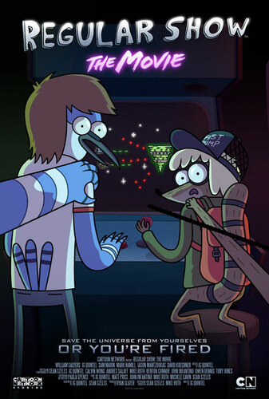
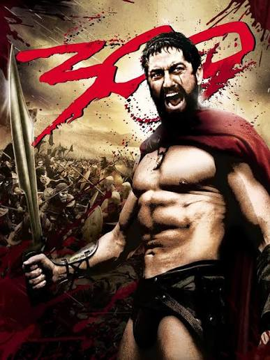

IMDB audiovisual
TOP 3 melhores filmes
top1
- senhor dos aneis

A trilogia cinematográfica O Senhor dos Anéis, dirigida por Peter Jackson e baseada na obra de J.R.R. Tolkien, narra a épica batalha entre o Bem e o Mal na Terra-média.
top2
- Apenas um show - o filme

Após um experimento de laboratório do ensino médio dar errado e criar acidentalmente um Timenado (tornado do tempo), o universo fica à beira da destruição. Para evitar o desastre e salvar a própria amizade, Mordecai e Rigby precisam viajar no tempo, enfrentar um treinador de vôlei maligno (o professor Ross) e lidar com consequências do passado
top3
- 300

Em 480 a.C., na Batalha das Termópilas, o rei Leônidas lidera apenas 300 guerreiros espartanos contra o gigantesco exército persa do autoproclamado deus-rei Xerxes. Sabendo que enfrentam uma missão quase impossível, eles lutam até o fim para defender sua liberdade e inspirar a união da Grécia
TOP 3 melhores séries
top1
- Richer
Jack Reacher é um ex-investigador da polícia militar do Exército dos Estados Unidos que viaja como andarilho pelos EUA usando sua força, inteligência e capacidade de dedução para resolver crimes perigosos e conspirações. A série é baseada na saga literária de Lee Child.
top2
- Apenas um show - o filme
Após um experimento de laboratório do ensino médio dar errado e criar acidentalmente um Timenado (tornado do tempo), o universo fica à beira da destruição. Para evitar o desastre e salvar a própria amizade, Mordecai e Rigby precisam viajar no tempo, enfrentar um treinador de vôlei maligno (o professor Ross) e lidar com consequências do passado
top3
- 300
Em 480 a.C., na Batalha das Termópilas, o rei Leônidas lidera apenas 300 guerreiros espartanos contra o gigantesco exército persa do autoproclamado deus-rei Xerxes. Sabendo que enfrentam uma missão quase impossível, eles lutam até o fim para defender sua liberdade e inspirar a união da Grécia